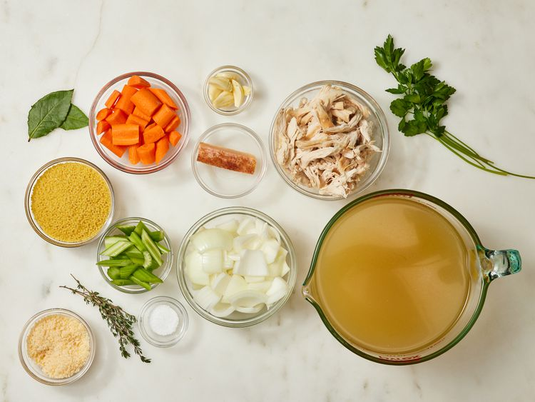
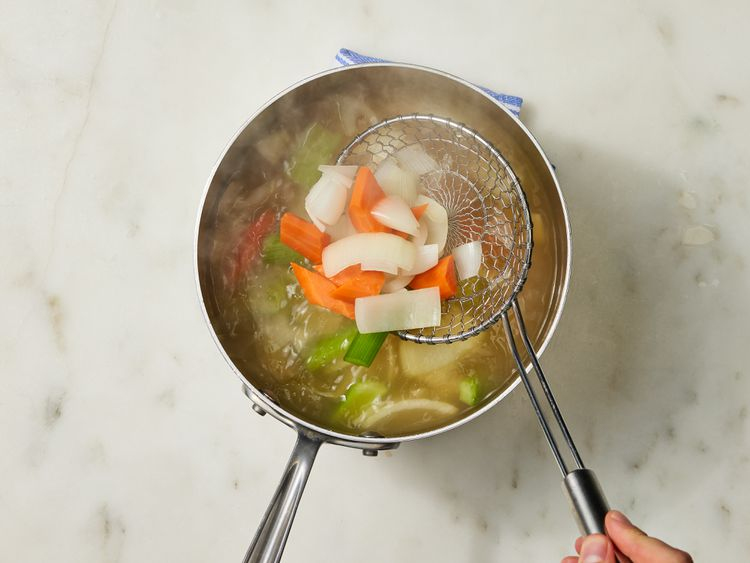
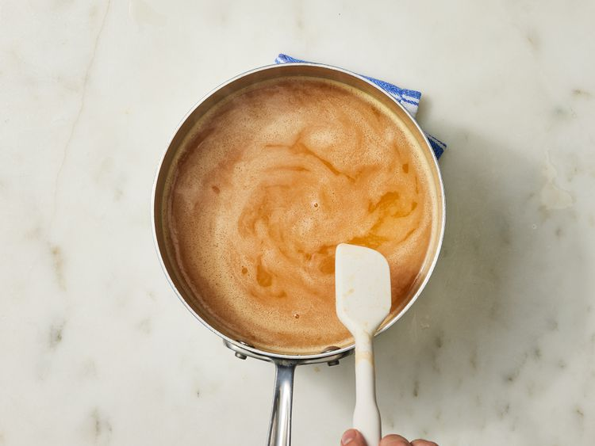
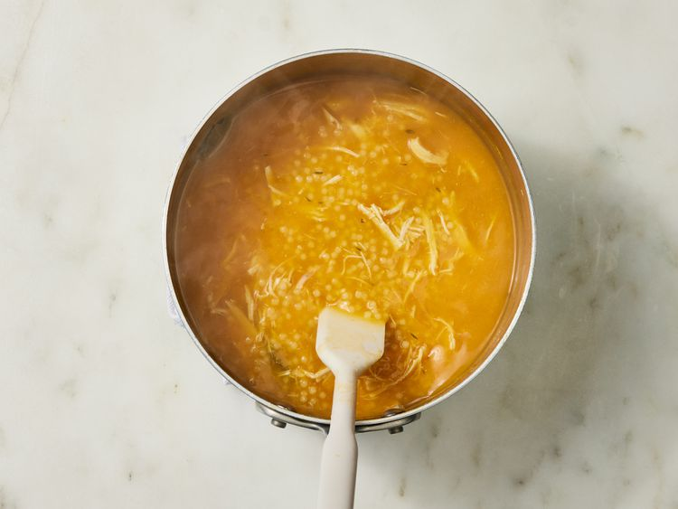
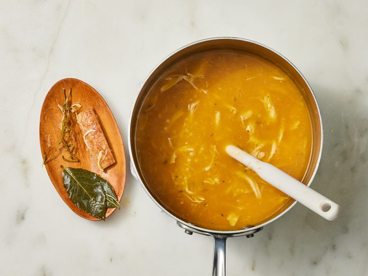

Italian Penicillin Soup

This comforting Italian penicillin soup is rich, flavorful, and packed with chicken, vegetables, pastina, and Parmesan. One taste, and this may be the only way you make chicken noodle soup from now on!
Ingredients
- 8 cups lower-sodium chicken broth
- 2 cups chopped sweet onion
- 1 1/2 cups peeled and coarsely chopped carrots
- 2 celery ribs, coarsely chopped
- 6 garlic cloves, smashed and peeled
- 3/4 teaspoon kosher salt
- 4 thyme sprigs
- 2 fresh bay leaves
- 1 (2 ounce) Parmigiano-Reggiano cheese rind, plus grated cheese for garnish
- 4 ounces uncooked pastina pasta
- 2 cups shredded rotisserie chicken
- Fresh flat-leaf parsley leaves, for garnish
Directions
- Gather all ingredients.

- Bring broth, onion, carrots, celery, garlic, and salt to a boil in a large saucepan or small Dutch oven over high heat. Reduce heat to medium-low and simmer until vegetables are softened, about 10 minutes. Using a slotted spoon, transfer vegetables and 1 cup cooking liquid to a blender.

- Secure the lid on the blender and remove the center piece to allow steam to escape. Place a clean towel over the opening. Process until smooth, about 30 seconds. Stir blended carrot mixture back into soup.

- Add thyme sprigs, bay leaves, and Parmigiano-Reggiano cheese rind. Bring to a boil over medium-high. Add pasta, reduce heat to medium-low, and simmer, stirring occasionally, until pasta is tender, 18 to 20 minutes, adding in shredded chicken for the last 3 minutes of cooking.

- Remove from heat. Remove and discard thyme sprigs, bay leaves, and Parmigiano-Reggiano cheese rind.

- Serve immediately; garnish with parsley and grated Parmigiano-Reggiano.
Back